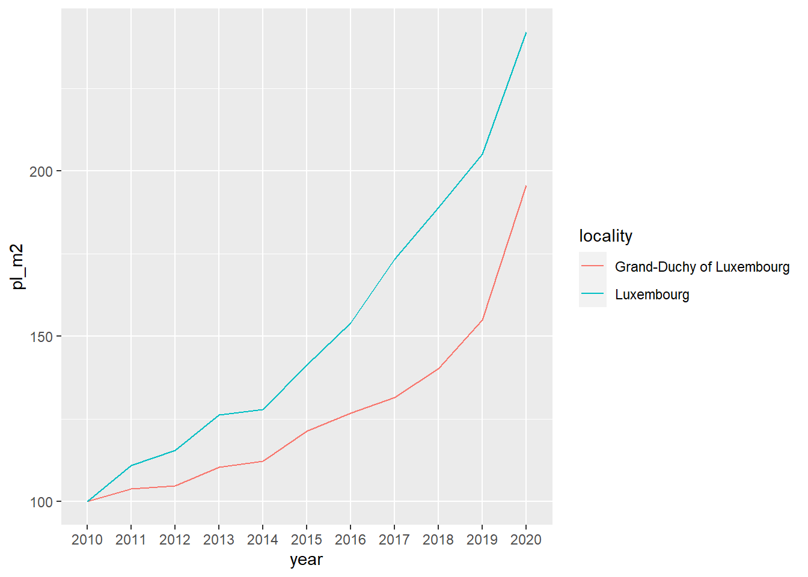
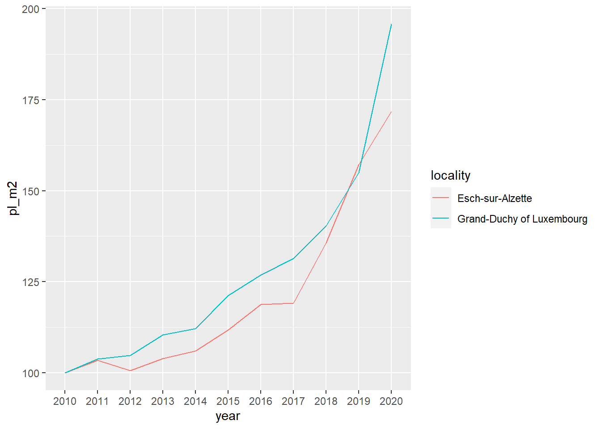
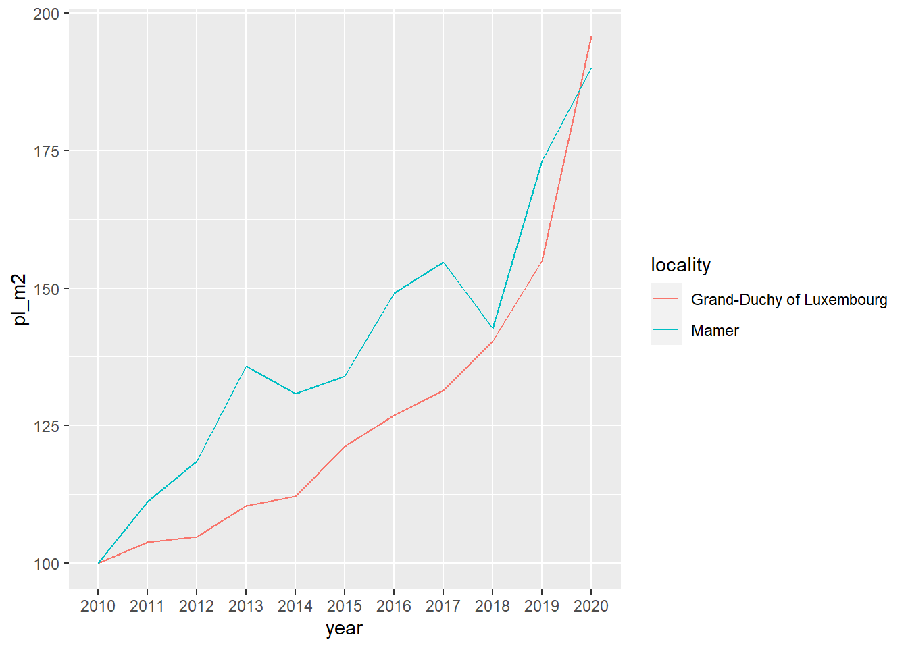

STAT 570 HW1
Hoousing in Luxembourg
We are going to use data about house prices in Luxembourg that is a little Western European country the author hails from that looks like a shoe and is about the size of .98 Rhode Islands.
Downloading Dataset
Before we download the dataset, let’s load some packages:
Now, let’s downloads the data, and outs it in a data frame:
Let’s see the data set:
# A tibble: 1,343 × 5
year locality n_offers average_price_nominal_euros average_price_m2_nom…¹
<chr> <chr> <dbl> <chr> <chr>
1 2010 Bascharage 192 593698.31000000006 3603.57
2 2010 Beaufort 266 461160.29 2902.76
3 2010 Bech 65 621760.22 3280.51
4 2010 Beckerich 176 444498.68 2867.88
5 2010 Berdorf 111 504040.85 3055.99
6 2010 Bertrange 264 795338.87 4266.46
7 2010 Bettembourg 304 555628.29 3343.22
8 2010 Bettendorf 94 495074.38 3235.26
9 2010 Betzdorf 119 625914.47 3343.05
10 2010 Bissen 70 516465.57 3321.65
# ℹ 1,333 more rows
# ℹ abbreviated name: ¹average_price_m2_nominal_eurosWhen we look at the data set, we can see that there is a problem that is columns should be of type numeric are of type character instead. Also, the naming of the communes is not consistent.
Let’s see:
# A tibble: 2 × 2
locality n
<chr> <int>
1 Luxembourg 9
2 Luxembourg-Ville 2We can see that the city of Luxembourg is spelled in two different ways. It’s the same with another commune:
# A tibble: 2 × 2
locality n
<chr> <int>
1 Petange 9
2 Pétange 2Now, let’s correct both these issues:
Converting “average” columns to numeric causes some NA values. Let’s see what happened:
# A tibble: 290 × 5
year locality n_offers average_price_nomina…¹ average_price_m2_nom…²
<chr> <chr> <dbl> <dbl> <dbl>
1 2010 Consthum 29 NA NA
2 2010 Esch-sur-Sûre 7 NA NA
3 2010 Heiderscheid 29 NA NA
4 2010 Hoscheid 26 NA NA
5 2010 Saeul 14 NA NA
6 2010 <NA> NA NA NA
7 2010 <NA> NA NA NA
8 2010 Total d'offres 19278 NA NA
9 2010 <NA> NA NA NA
10 2010 Source : Minist… NA NA NA
# ℹ 280 more rows
# ℹ abbreviated names: ¹average_price_nominal_euros,
# ²average_price_m2_nominal_eurosIt turns out that there are no prices for certain communes, but that we also have some rows with garbage in there. Let’s go back to the raw data to see what this is about:

We need to filter the data by removing specific rows. Firstly, eliminate the rows where the ‘locality’ information is missing. Next, exclude the row where ‘locality’ is labeled as ‘Total d'offres’ since it represents the total offers from all communes. This row can either be kept in a separate dataset or removed entirely. Additionally, remove the very last row as it contains the source information.
Furthermore, in the provided screenshot, there is an additional row that is not visible in our filtered data frame, where ‘n_offers’ is missing. This row provides the national average for columns ‘average_price_nominal_euros’ and ‘average_price_m2_nominal_euros.’ To handle this, let’s create two distinct datasets: one containing commune-specific data and the other with national price information. Start by removing the rows mentioning the data sources, then keep the communes in our data.
After that, let’s create a dataset with the national data as well:
# A tibble: 6 × 5
year locality n_offers average_price_nomina…¹ average_price_m2_nom…²
<chr> <chr> <dbl> <dbl> <dbl>
1 2010 Grand-Duchy of L… 19278 569216 3251
2 2011 Grand-Duchy of L… 21253 597785. 3375.
3 2012 Grand-Duchy of L… 14773 596348. 3409.
4 2013 Grand-Duchy of L… 13298 644885. 3590.
5 2014 Grand-Duchy of L… 9852 663640. 3647.
6 2015 Grand-Duchy of L… 9630 724342 3943
# ℹ abbreviated names: ¹average_price_nominal_euros,
# ²average_price_m2_nominal_eurosNow the data looks clean, and we can start the actual analysis after make sure that we got every commune in there. For this, we need a list of communes from Luuxembour. Thankfully, Wikipedia has such a list.
Let’s scrape and save this list to get full control of this page.
Then, let’s see if we have all the communes in our data:
[1] "Bascharage" "Boevange-sur-Attert" "Burmerange"
[4] "Clémency" "Consthum" "Ermsdorf"
[7] "Erpeldange" "Eschweiler" "Heiderscheid"
[10] "Heinerscheid" "Hobscheid" "Hoscheid"
[13] "Hosingen" "Luxembourg" "Medernach"
[16] "Mompach" "Munshausen" "Neunhausen"
[19] "Rosport" "Septfontaines" "Tuntange"
[22] "Wellenstein" "Kaerjeng" We have noticed disparities between the communes listed in our ‘commune_level_data’ and ‘current_communes.’ These differences can be attributed to various reasons, such as spelling discrepancies like ‘Kaerjeng’ in our data versus ‘Käerjeng’ in the Wikipedia table. Additionally, some communes have merged into new ones since 2010, causing certain communes to disappear from our data starting in 2012.
To address this, we need to take several steps: firstly, compile a comprehensive list of all existing communes from 2010 onwards. Secondly, standardize the spellings to ensure consistency. For this task, we can utilize a list from Wikipedia, which will be re-hosted on Github pages to prevent future issues.
# A tibble: 20 × 3
name year_dissolved reason
<chr> <int> <chr>
1 Bascharage 2011 merged to form Käerjeng
2 Boevange-sur-Attert 2018 merged to form Helperknapp
3 Burmerange 2011 merged into Schengen
4 Clemency 2011 merged to form Käerjeng
5 Consthum 2011 merged to form Parc Hosingen
6 Ermsdorf 2011 merged to form Vallée de l'Ernz
7 Eschweiler 2015 merged into Wiltz
8 Heiderscheid 2011 merged into Esch-sur-Sûre
9 Heinerscheid 2011 merged into Clervaux
10 Hobscheid 2018 merged to form Habscht
11 Hoscheid 2011 merged to form Parc Hosingen
12 Hosingen 2011 merged to form Parc Hosingen
13 Mompach 2018 merged to form Rosport-Mompach
14 Medernach 2011 merged to form Vallée de l'Ernz
15 Munshausen 2011 merged into Clervaux
16 Neunhausen 2011 merged into Esch-sur-Sûre
17 Rosport 2018 merged to form Rosport-Mompach
18 Septfontaines 2018 merged to form Habscht
19 Tuntange 2018 merged to form Helperknapp
20 Wellenstein 2011 merged into Schengen As you can see, since 2010 many communes have merged to form new ones. We can now combine the list of current and former communes, as well as harmonise their names, and then run our test again.
setdiff(unique(commune_level_data$locality),
communes)character(0)Now, every commune has existed since 2010, we don’t have any commune that is unaccounted for. After cleaning the data, we can now start with analysing the data.
Analysing the Data
First of all, let’s compute the Laspeyeres index for each commune:
commune_level_data <- commune_level_data %>%
group_by(locality) %>%
mutate(p0 = ifelse(year == "2010", average_price_nominal_euros, NA)) %>%
fill(p0, .direction = "down") %>%
mutate(p0_m2 = ifelse(year == "2010", average_price_m2_nominal_euros, NA)) %>%
fill(p0_m2, .direction = "down") %>%
ungroup() %>%
mutate(pl = average_price_nominal_euros/p0*100,
pl_m2 = average_price_m2_nominal_euros/p0_m2*100)Then, let’s compute it for the whole country:
country_level_data <- country_level_data %>%
mutate(p0 = ifelse(year == "2010", average_price_nominal_euros, NA)) %>%
fill(p0, .direction = "down") %>%
mutate(p0_m2 = ifelse(year == "2010", average_price_m2_nominal_euros, NA)) %>%
fill(p0_m2, .direction = "down") %>%
mutate(pl = average_price_nominal_euros/p0*100,
pl_m2 = average_price_m2_nominal_euros/p0_m2*100)Now, we are going to create a plot for 3 communes, and compare the price evolution in the communes to the national price evolution.
List of the communes:
communes <- c("Luxembourg",
"Esch-sur-Alzette",
"Mamer")Plot of Luxembourg:

Plot of Esch sur Alzette:

Plot of Mamer:
